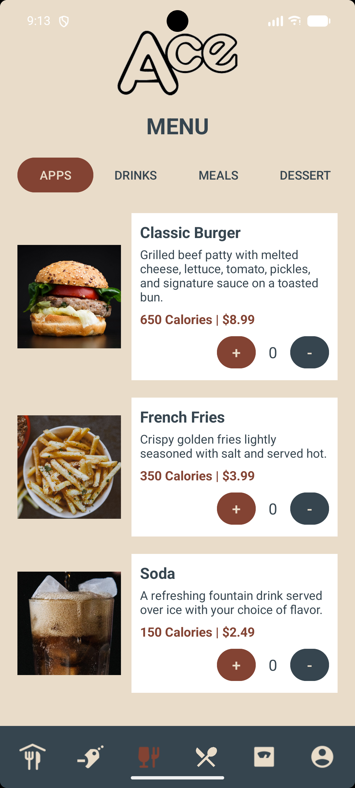
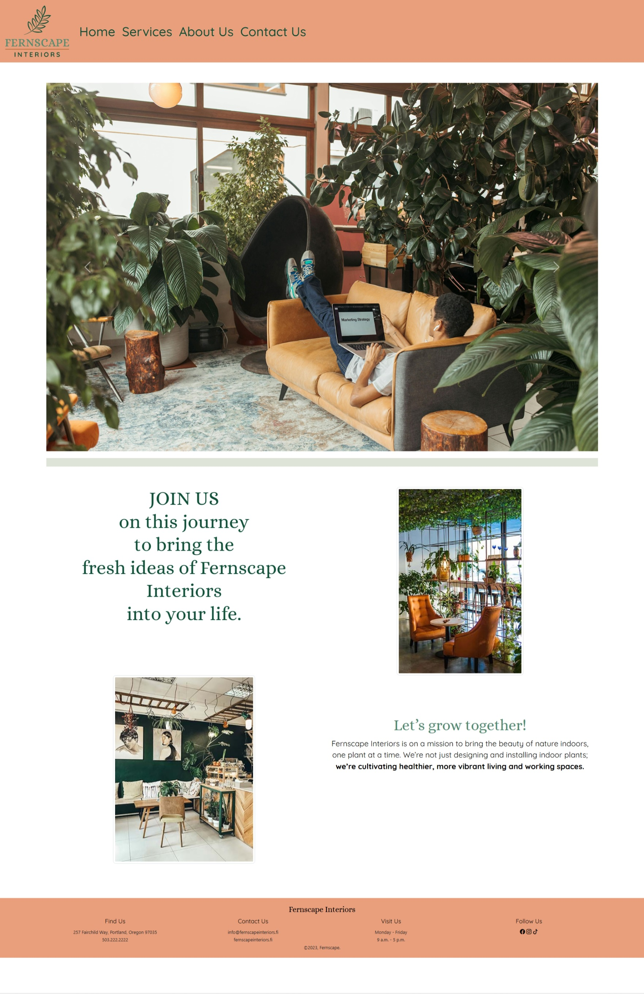
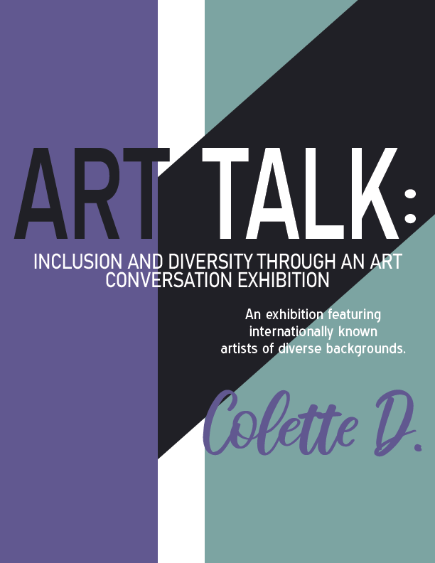

UX/UI · Mobile Application
Ace Restaurant
A mobile ordering experience developed from wireframes through final interface design, with menu browsing, nutrition information, ordering, deals, and account management.
View case studyMultidisciplinary designer in San Diego, California
I’m Arisa, a multidisciplinary designer combining UX/UI, responsive web design, visual communication, and technology to create experiences that are clear, accessible, and engaging.
Selected projects
Selected case studies spanning UX/UI, responsive web design, digital experiences, editorial systems, and visual campaigns.

UX/UI · Mobile Application
A mobile ordering experience developed from wireframes through final interface design, with menu browsing, nutrition information, ordering, deals, and account management.
View case study
Brand Identity · UX/UI · Responsive Web Design
A responsive digital experience developed from brand strategy and wireframes through a cohesive final website.
View case study
Editorial · Campaign · Print Design
A coordinated exhibition identity combining a multi-page catalog, magazine advertising, and promotional collateral into one cohesive visual system.
View case study
UX/UI · E-commerce
An e-commerce florist experience developed through wireframes, responsive layouts, visual hierarchy, and customer-focused shopping flows.
View case study
Web Design · Digital Experience
A focused landing-page experience using typography, imagery, calls to action, and responsive layout to create a clear and engaging user journey.
View case study
Visual Design · Integrated Campaign
An integrated visual campaign promoting a sustainable meal service while maintaining a consistent brand experience across promotional materials.
View projectWhat I do
Front-end development, information systems, databases, technical documentation, implementation, testing, and translating design concepts into functional experiences.
Information architecture, HTML, CSS, responsive layouts, web content, and content organization.
Campaign design, branding, digital advertising, typography, layout, and image treatment.
Information systems, databases, technical documentation, implementation, and customer support.
About me
My background combines graphic design, UX/UI, web content, customer service, and technology. I enjoy turning complex ideas into visual experiences that are clear, useful, and approachable.
Learn more about meLet’s connect
I’m open to UX/UI, web, visual design, digital experience, usability, and implementation opportunities.
Email Me